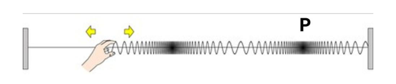
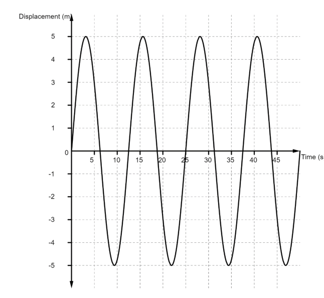
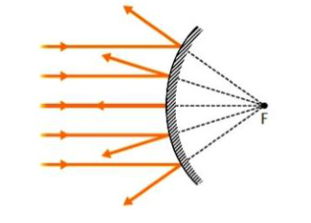
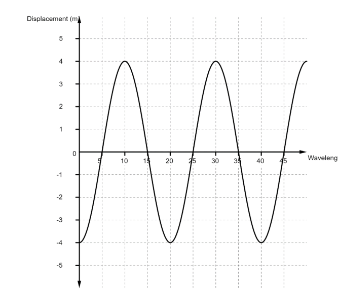
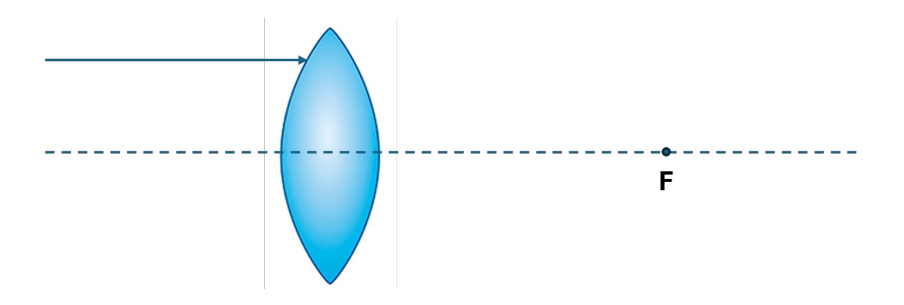
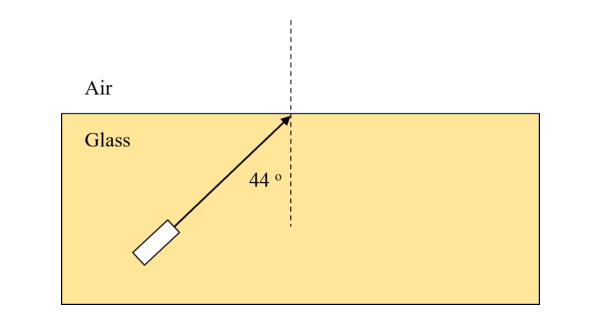
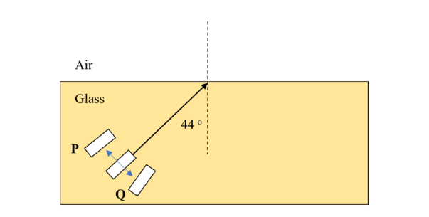
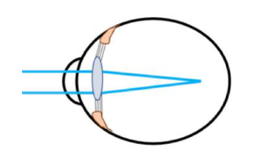

Section 1: Multiple choice (12 marks)

Which statement best describes the wave type and the name of the region labelled P?
Which change to the slinky would make the wave travel faster?
The speed of a wave depends on the medium. Changing how often you shake it changes the frequency and wavelength, but not the speed.
Which of these sounds could not be heard by a human ear?
Humans hear roughly 20 Hz to 20 000 Hz.
Questions 4 and 5 refer to the following graph.

The amplitude of the wave is:
Which of the following gives the period of the wave?
Which of the following is an example of luminescence?
Luminescence is light produced without heat; the others are incandescence (light from hot objects).
In which state of matter would you expect sound to travel fastest?
Which of the following is a good conductor of heat?
When a blue torch and a green torch are shone onto a white wall, the colour produced is:
Which of the following is not an example of heat radiation?
Fluffed-up feathers trap air, an insulator, which reduces heat loss by conduction and convection.

Referring to the diagram above, which statement is correct?
Which cells in the eye detect colour?
Section 2: Short answer (28 marks)
For calculations: 1 mark for correct substitution into the correct equation and 1 mark for the correct answer. Full marks are given for a correct answer with no working.
Question 1 (6 marks)
The following graph shows a sound wave.

State the wavelength of the wave in metres. (Watch the units!)
One full wave is 20 cm = 0.20 m.
The frequency of the source is 1650 Hz. Calculate the speed of the wave.
v = λf = 0.20 × 1650 (1 mark) = 330 m/s (1 mark).
Calculate the period of the wave.
T = 1 / f = 1 ÷ 1650 = 0.00061 s (6.1 × 10−4 s).
The sound travels to the end of a hall (97 m long), reflects and travels back to the speaker, where it is detected (use a speed of 340 m/s). Find the time taken for the wave to travel the total distance.
Total distance = 2 × 97 = 194 m. t = d / v = 194 ÷ 340 (1 mark) = 0.57 s (1 mark).
Question 2 (5 marks)
A convex lens is shown below. Its focal point F is on the dashed central axis.

On paper, continue the path of the incident ray, clearly showing how it refracts. Describe it, then compare.
- The ray refracts (bends towards the normal) as it enters the first surface of the lens (1 mark).
- It refracts again (away from the normal) as it leaves the second surface, and then passes through the focal point F (1 mark).
At the point where the light leaves the lens, draw and label the normal and label the angle of incidence (i) and the angle of refraction (r). Describe your diagram, then compare.
- The normal is drawn at 90° to the lens surface at that point (1 mark).
- i is correctly marked between the ray inside the lens and the normal (1 mark).
- r is correctly marked between the ray leaving the lens and the normal; it is larger than i, as the light speeds up going into air (1 mark).
Question 3 (4 marks)
Two students are experimenting with a piece of solid plastic tubing that acts like an optic fibre. They shine light into the end and see that some light refracts and some undergoes internal reflection. The light hits the surface at 44° to the normal.

On paper, draw the two paths of the light from the plastic/air interface (one reflected and one refracted), and label each. Describe them, then compare.
- The refracted ray goes into the air at an angle bigger than 44° to the normal (1 mark).
- The reflected ray goes back into the plastic at an angle equal to 44° (1 mark).
State the angle of reflection.
The students want to change the set-up so that all of the light undergoes total internal reflection.

Which action would increase the amount of total internal reflection?
Total internal reflection happens when the angle of incidence is larger than the critical angle.
Question 4 (6 marks)
Myopia (short-sightedness) affects 25% of Australians, including many science teachers. In eyes with myopia, the convex lens can't be made thin enough, so the focal length is too short and light from distant objects focuses in front of the retina.

State the type of lens that could be used to treat someone with myopia:
On paper, draw your lens in front of the eye and show the path of parallel light rays with the corrective lens in place. Describe it, then compare.
- A concave lens is drawn in front of the eye (1 mark).
- The light rays spread out (diverge) as they refract through the concave lens (1 mark).
- The eye's lens then refracts them so they focus on the retina at the back of the eye (1 mark).
Explain why a person with myopia can often still see near objects clearly without corrective lenses.
Light from a close object is already spreading out (diverging) a lot when it reaches the eye (1 mark), so the eye's strong lens can still focus it onto the retina (1 mark).
Question 5 (4 marks)
A pot of water is placed on a bench. The initial temperature of the water is 297 K.
What is the temperature of the water on the Celsius scale?
297 − 273 = 24 °C.
Over time, the water level in the pot drops, even though no heat is added. Is this due to vaporisation (boiling) or evaporation? Explain your answer.
- Evaporation (1 mark).
- The fastest-moving (most energetic) water molecules escape from the surface, even below boiling point (1 mark).
- This lowers the average energy, and so the temperature, of the water left behind (1 mark).
By referring to the appropriate heat transfer method, explain how a sea breeze cools communities near the coast on a hot afternoon. Use a clearly labelled diagram (on paper) to show the flow of heat energy.
- A labelled diagram showing the land, the sea and arrows for the air flow (1 mark).
- The land warms up faster than the water, so the air above the land warms and rises (1 mark).
- Cooler air over the water sinks and is drawn in over the land, creating a convection current: the sea breeze (1 mark).
A maximum of 2 marks is given if convection isn't included in the diagram or explanation.